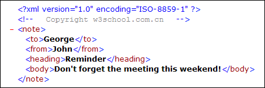

查看 XML 文件
在所有现代浏览器中，可能够查看原始的 XML 文件。
不要指望 XML 文件会直接显示为 HTML 页面。
查看 XML 文件
查看这个 XML 文件：note.xml
打开 XML 文件 - XML 文档将显示为代码颜色化的根以及子元素。通过点击元素左侧的加号或减号，可以展开或收起元素的结构。如需查看不带有 + 和 - 符号的源代码，请从浏览器菜单中选择“查看源代码”。
注释：在 Netscape, Opera 以及 Safari 中，仅仅会显示元素文本！要查看原始的 XML，请右击页面，然后选择“查看源代码”。
其他的 XML 实例
请查看这些 XML 文档，这会有助于您建立对 XML 的感性认识。
- 一个 XML 的 CD 目录
- 这是我父亲的 CD 收藏，被存储为 XML 数据 (我猜可能是很老很无聊的题目... :-)）
- 一个 XML 的植物目录
- 来自园艺店的植物目录，存储为 XML 数据。
- 一个简单的菜单
- 这是来自餐馆的早餐菜单，存储为 XML 数据。
为什么 XML 会这样显示？
XML 文档不会携带有关如何显示数据的信息。
由于 XML 标签由 XML 文档的作者“发明”，浏览器无法确定像 <table> 这样一个标签究竟描述一个 HTML 表格还是一个餐桌。
在没有任何有关如何显示数据的信息的情况下，大多数的浏览器都会仅仅把 XML 文档显示为源代码。
在下面的章节，我们会了解几个有关这个显示问题的解决方案，其中会使用 CSS、XSL、JavaScript 以及 XML 数据岛。